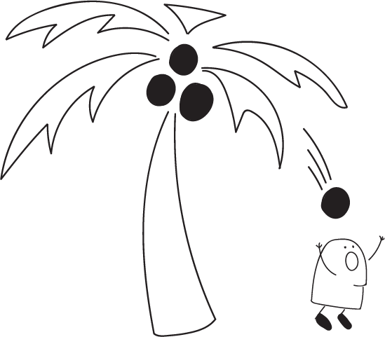

BACKGROUND
Coconuts falling from their trees and striking individuals can cause serious injury to the back, neck, shoulders and head, and are occasionally fatal.
Following a 1984 study on "Injuries Due to Falling Coconuts", exaggerated claims spread concerning the number of deaths by falling coconuts. Falling coconuts, according to urban legend, kill a few people a year. This legend gained momentum after the 2002 work of a noted expert on shark attacks was characterized as saying that falling coconuts kill 150 people each year worldwide. This statistic has often been contrasted with the number of shark-caused deaths per year, which is around five.

Concern about the risk of fatality due to falling coconuts led local officials in Queensland, Australia, to remove coconut trees from beaches in 2002. One newspaper dubbed coconuts "the killer fruit". Historical reports of actual death by coconut nonetheless date back to the 1770s.[4]
Another way to "die by coconut" is to have sudden cardiac death as a result of hyperkalemia, after consuming moderate to large quantities of coconut water, due to the high levels of potassium in coconut water.
Coconut fruit come from the coconut palm (Cocos nucifera), which can grow up to 30 m (100 ft) tall, with pinnate leaves 4–6 m (13–20 ft) long and pinnae 60–90 cm (2–3 ft) long. Older leaves will break away cleanly from the tree leaving a smooth trunk. While a mature and thriving tree can yield up to 75 fruits per year, it is more common to get fewer than 30. A full-sized coconut weighs about 1.44 kg (3 lb 3 oz). Coconut palms are cultivated in more than 80 countries, with a total production of 61 million tonnes per year.
The origin of the death by coconut legend was a 1984 research paper by Dr. Peter Barss, of Provincial Hospital, Alotau, Milne Bay Province, Papua New Guinea, titled "Injuries Due to Falling Coconuts", published in The Journal of Trauma (now known as the Journal of Trauma and Acute Care Surgery. In his paper, Barss observed that in Papua New Guinea, where he was based, over a period of four years 2.5% of trauma admissions were for those injured by falling coconuts. None were fatal but he mentioned two anecdotal reports of deaths, one several years before. That figure of two deaths went on to be misquoted as 150 worldwide, based on the assumption that other places would have a similar rate of falling coconut deaths. In October 2001, Barss received an "Ig Nobel Award" from the Annals of Improbable Research in recognition of research that "cannot or should not be replicated". In response to the dubious distinction, Barss told the Canadian Medical Association Journal, "When you're treating these injuries daily, it's not funny at all".
Following the publication of Barss' study, exaggerated claims about the number of deaths by coconut began to spread. Reports of death by coconut became so widespread that The Straight Dope, a newspaper column devoted to exposing myths, reported that it had become an urban legend. Another writer, Joel Best, described the claim of widespread deaths as a "journalistic equivalent of a contemporary legend". An analysis by the Shark Research Institute cites a press release from Club Travel, a UK-based travel insurance company, as helping to spread the urban legend. In an attempt to market travel insurance to individuals traveling to Papua New Guinea, the release stated that coconuts were "ten times more dangerous than sharks". In May 2002, the legend gained new momentum when George H. Burgess, director of the International Shark Attack File, claimed that "falling coconuts kill 150 people worldwide each year".